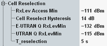

Cell Reselection
The parameters in this section define the cell reselection information to be transmitted in the BCCH. For detailed information, refer to 3GPP TS 45.008.

Settings for cell reselection
Sets the minimum received signal level at the MS antenna required to access the GSM cell.
Option R&S CMW-KS210 is required.
Remote command:Sets the hysteresis for the cell reselection algorithm.
Remote command:Sets the minimum received signal level at the UE antenna required to access the LTE cell.
Option R&S CMW-KS210 is required.
Remote command:Sets the minimum received signal level at the UE antenna required to access the UMTS cell.
Option R&S CMW-KS210 is required.
Remote command:Sets the time hysteresis for the cell reselection algorithm.
Option R&S CMW-KS210 is required.
Remote command: